Cia. Ex-sedentário
vamo, vamo, vamo…
Desculpe me intrometer na sua vida assim tão diretamente.
Não sei se é o caso de entrar nesse assunto agora mas vou tomando a liberdade de amiga pra dizer:
Será que alguém muito especial, não anda meio esquecido de sua agenda?
Sabe quem?
Essa pessoa está olhando para a tela agora.
É… Você mesmo!
Está tudo bem ou a comunicação interna anda complicada?
Você quer fazer uma coisa, faz outra?
Quer dizer algo pra alguém e acaba falando uma bobagem?
Ou, pior, quer falar de paz e…
Acaba entrando em guerra e arrumando mais problemas?
Você está dando a devida atenção para os seus sentimentos?
A vida não precisa ser levada tão a sério!!
Pegue leve com você e com os outros.
Não entre nessa de levar tudo a ferro e fogo…
Descontraia sempre que a corda estiver muito tensionada pois se arrebentar não tem mais jeito.
Ria, ria muito, ria sempre – com os amigos…
Com seu cachorro, com o que for – e principalmente ria de si mesmo.
Rir refresca a alma e lubrifica a mente.
Olhe para dentro de si e acredite:
Você é uma pessoa única e especial!
Respeite-se.
Dê valor aos seus sentimentos.
Acorde a sua confiança e a sua fé.
Como dizia Oscar Wilde:
“A vida é importante demais para ser levada tão a sério”. (anônimo)
Um final de semana esplendoroso!!!

Na semana passada resolvi fazer a inscrição para o Circuito Trekking. Achei interessante essa modalidade de esporte, pois poderia envolver toda a família. Sobre a definição de trekking veja meu link http://urbi-orbi-trek.blogspot.com/
Hoje acordamos cedo, o dia estava nublado, mas sem chuva, ainda bem, porque fomos dormir no sábado com muita chuva.


Por onde andam CLAUDIO e MELINHA?!
Uma simples corridinha pelas montanhas já fez todo esse estrago de não poder postar nada sobre a prova????
Acho que vcs ainda SÃO sedentários!!!!
Estamos aguardando suas postagens…………………enquanto eu procuro novas aventuras!!!!!!!!!!!

P A U L E I R A!!!!!!!!!!!!!!!!!!! (pensamento que me ocorreu para abrir este post enquanto eu corria a metade do percurso)
Vamos ao início:
Para participar da prova nessa modalidade que aconteceu em Paranapiacaba precisei comprar um tênis específico de montanha e que pudesse usar também em travessias com água. Após troca de e-mails com o site de venda comprei meu tênis.
Esclareço que o fiz não por puro consumismo, e eu que no ano passado nem tinha conhecimento de tipos de tênis e etc…. (post de estréia neste blog), mas como venho de uma recuperação de rompimento de 2 ligamentos, mais o fato da orto ter me advertido que em qualquer corrida eu deveria usar faixa para prevenção de nova lesão, comprei a faixa e há 2 semanas adquiri tênis próprio para essa corrida.
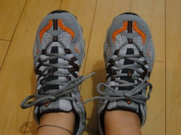 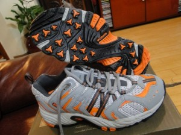
Sábado de manhã partimos para Paranapiacaba, aqui em Sampa o dia estava quente e abafado. Chegando a Ribeirão Pires o tempo começou a mudar, estava nublado com um pouco de neblina.
Chegamos a nosso destino, estacionamos e ajeitamos as tralhas. Eu levei uma muda de roupa limpa, toalha, bolachas para a Syssi e Igor, água, kanga para estender em algum gramado para esticar os esqueletos, Sy levou jogo de cartas, enfim, uma mochilinha básica de domingo no parque, para entreter quem ficaria nos aguardando já que eu sequer tinha noção do meu tempo de percurso.
Quando estávamos nos encaminhando para o Mercado Antigo, local de concentração da prova, ao acaso ouço um cumprimento efusivo, chegava o Claudio, Alex e Elis, se tivéssemos combinado local não teria dado tão certo!
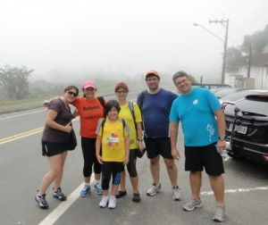 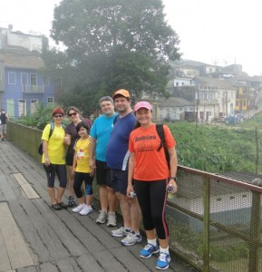
Finalmente eu conheceria a pessoa Elis, companheira de treinos do Claudio, parceira de algumas corridas do Paulo Mota, agora Baleia, comentarista de meus post e eu os dela. Maravilhoso encontro, aquela amizade de net agora era real, tanto ela como eu nos encantamos pela cidade, apesar de pequena e parada no tempo tem uma paisagem nostálgica. Quando chegamos perto das 13h já estava baixando um fog parecido com aquela cena dos filmes londrinos. Apesar do fog presente naquele momento e que perduraria até a largada, não estava frio, ao contrário, eu sentia calor, estava abafado.


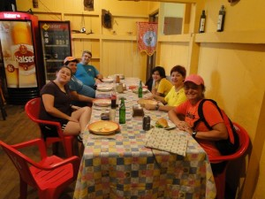
Assistimos e prestigiamos a largada do percurso longo, pois Elis estaria correndo nesta modalidade. Enquanto aguardávamos Melinha me perguntou se iríamos atravessar com água pelo peito porque ouviu alguém comentando, não li nada a respeito, no regulamento dizia apenas trechos com água, mas havia lido comentários que na prova do ano passado choveu muito os riachos tiveram seu volume aumentado e, que talvez não fosse tudo isso de água.

Alguns minutos depois é anunciada a concentração para o percurso curto, naquele momento o fog era intenso, mal podíamos ver além de 30 passos à frente. Andamos cerca de 2k, quando estávamos descendo vimos uma leva de corredores retornando, a largada seria no posto de hidratação (5k do percurso curto). A confusão estava instalada!
Ouvi o som da voz de alguém pedindo desculpas pelo transtorno….. e que tinha trabalhado a semana toda no percurso…….. que precisaríamos aguardar uns 2 min mais, o resto não consegui ouvir. Não preciso comentar que não havia portal de largada e sequer cronometro neste marco.
Dada a largada enfrentamos uma descida acidentada, cheia de pedra brita solta. No começo corri no mesmo passo de Melinha, Alex e Claudio, mas vi uma brecha e me desgarrei do grupo, pensei que se eu soltasse agora o freio seria melhor, porque nos trechos de água e trilhas talvez eu fosse mais devagar… por ai fui, no final da descida viramos a direita e pé na lama!…….. uau, uma trilha e logo a seguir lama pura, nas primeiras pisadas meu tênis ficou na lama, o pé veio sem calçado, tive que espichar para conseguir calçá-lo e correr pela trilha a fora, escorreguei muito, depois veio o 1º trecho com água, só ouço o Claudiao gritando e pumba, vai de bunda mesmo, escorrega e cai na água, deslancha e o perco de vista. Só tivemos um trecho de água que estava no nível da trilha, em todos os demais a ribanceira era razoável em que você precisava pular ou escorregar devagar para cair no riacho.
Até ai tudo beleza!!! Consegui correr legal nas trilhas lamacentas e atravessar os riachos, eis que chega um percurso em que só pular no riacho não era o suficiente, precisaríamos andar por ele, a água estava lamacenta o que dificultava ver o fundo, restava apenas tatear com o pé e seguir…… a água batia na cintura! Pensei na Melinha com a máquina fotográfica e o cel, o meu que estava na cintura tratei de puxar a pochete para cima do peito e fui andando pelo riacho com todo cuidado quer pelo tornozelo ou para não cair; vi uma participante escorregando ao meu lado e enfiar o ombro direito totalmente na água, pensei: “muita calma nessa hora”. Atravessei o riacho, subi a ribanceira e novamente trilha.
Sem saber estaria eu agora desbravando o último percurso de água que consistiu em escalar uma pequena cascata, mas bastante inclinada. Como eu estava com um tênis que podia enfiar o pé a água fui sem medo, mas sempre procurando pisar no firme, às vezes alguns galhos ou cipós serviam de suporte sem colocar muita força neles, mais como guia. No final da cascata um staff nos diz: agora só descida. Ah, não confie jamais!! Decerto que realmente tinha uma descida, mas não era só descida, as subidas eram igualmente consideráveis as descidas.
Enquanto o percurso na trilha com água era paisagem de muita vegetação alta, o restante do trajeto, após a cascata, foi de trilha aberta, terra vermelha menos úmida. Detalhe, o sol e mormaço estavam mais presentes, não havia vegetação para fazer muita sombra. O terrível o fato de que desde a largada não tivemos nenhum posto de hidratação, acho que a organização pensou que pelo fato de estarmos atravessando os riachos não daria sede, e caso ocorresse, era só abaixar e beber água lamacenta?!
Continuando as descidas íngremes Alecão conseguiu me alcançar, perguntei por Melinha e fui informada que estaria uns 10/12 min atrás, comentamos sobre a falta de posto de hidratação e, como ele tinha mais pernas foi embora.
Segui meu ritmo, passei por uma torre de transmissão e bem adiante outra, como era clareira deu para ver o quão alto estávamos neste momento pensei na palavra que inicia este texto, pensei na falta de água e o quanto faltava para chegar no 5k, o que representava posto de hidratação. Enfim chegava ao 5k, o que representava também o final das trilhas. Pego um copo de água, imagino que falta 2k para o final, vejo no cronometro já decorrido mais de hora, fixo minha meta em cruzar com menos de 2 hs, e penso: Querer é poder, se assim quero, assim eu posso!!!
Desbravo os 2k faltantes, agora em estrada de chão batido com pedra brita, disputando com veículos e bicicletas a mesma estrada. Para chegar aos últimos 100 ms precisei enfrentar uma ladeira e quase me faltou pernas, mas superada a ladeira respiro fundo e trotando cruzo a chegada, antes, ouço Syssi gritando por mim, depois vejo Claudio, Alex e Elis.
Cruzo feliz e satisfeita da vida. O tempo não era o ideal, mas para mim, com tantos entraves, foi meu Oscar da corrida.
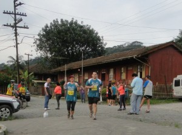
Infelizmente depois de pegar a medalha nada de fruta, cereal ou isotônico, acabou antes da hora?! Uma cara de espanto da funcionária ao me dizer isso. Palhaçada geral!
A inscrição não foi barata para o tipo de organização apresentado. Ficam aqui divisores, um para o percurso que adorei, curti todo o trajeto e outro para a organização um circo armado cujos coadjuvantes fomos nós sem saber. Vasculhando o site do evento várias tem sido as reclamações quanto a hidratação e final de prova.
Alguns minutos depois chega Melinha que também é festejada por nós.
Meu tempo: 1h59min30seg, sem água durante 2/3 da prova, sem aditivos, somente pernas e pés.
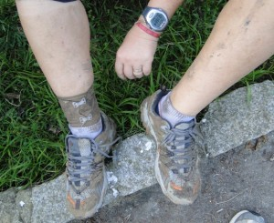 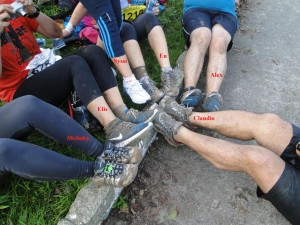 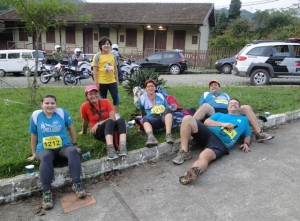
O pós prova está muito bom, 2 arranhões no braço direito e apenas uma dorzinha na coxa mas segunda já estarei nova em folha.
Sem pensar na organização, a prova teve todo seu charme pela lama, travessia de rio, subida pela cascata, trilha, diria que uma prova-aventura sem igual!!!
Com o pé atolado na lama e de celular na mão resolvi fazer uma vídeo reportagem da aventura deste último sábado.
O Claudião vai fazer um post todo especial completando esta vídeo reportagem. Né Claudião???

Para aqueles que não irão emendar o feriado prolongado de Páscoa e estão dispostos a passear com a família em São Roque para participar de uma corrida de rua no sábado de manhã, aliás será um evento para todos os gostos, corrida, caminhada e corrida kids, segue abaixo maiores informações:
Local: Largada e Chegada na Praça da Matriz, ao lado da Igreja Matriz – São Roque/SP.
Data: 23 /04/2011
Valor inscrição: R$ 25,00 Horário de largada: 9h (horário de Brasília).
Formas de Percurso: 8 k para os Corredores; 3 k para os Caminhantes.
Site do evento: http://www.corridadealeluia.com.br/index.html
Regulamento: http://www.corridadealeluia.com.br/regulamento.htm
Data: 23 de Abril de 2011
Largada: Av. dos Bandeirantes
Horário de largada: 14hs
a) 6 anos – 100 mts
b) 7 e 8 anos – 200 mts
c) 9 e 10 anos – 400 mts
d) 11, 12 e 13 anos – 600 mts
e) 14 e 15 anos – 1 km
Site do evento: http://www.corridadealeluia.com.br/aleluia.htm
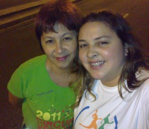
Estava fazendo algumas coisas a noite na varanda e de lá tenho uma boa visão do minhocão. O tráfego ainda ainda estava liberado para os carros, depois de alguns minutos ao dar nova espiada vejo algumas pessoas correndo, uma mãe empurrando o carrinho de bebe, uns encurtando o caminho para chegar em casa e outros andando de bike.
Passei pelo quarto da meninas e perguntei a Melinha se ela não iria treinar porque o minhocão já estava fechado ela duvidou e foi checar, eis que volta correndo me intimando a trocar de roupa para treinar, pois neste final de semana participaremos de uma corrida.
Confesso que fui sem vontade, mas ela me incentivou dizendo que não teria sol, estava fresquinho. Já na rua senti uma deliciosa brisa, o tempo realmente nos convidava a treinar.
Fizemos o percurso de ida e volta, intervalando trotes e caminhadas, nada muito forte porque Melinha está dolorida da corrida de domingo e precisa poupar-se para sábado. Eu ainda estou sem pulmão, mas não fiquei cansada, deu até para suar a camiseta.
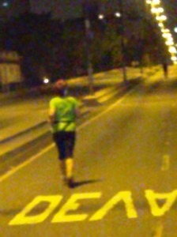 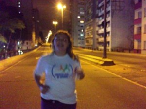
Depois de postar no blog vou dormir ao embalo das músicas de Enya satisfeita por ter desmistificado o temor de correr a noite no minhocão.
Com vossa licença, Morfeu me chama …………….. e parafraseando o Claudião, terei hoje um sono perfeito!
Ontem apenas caminhei 2,8 Km e hoje fiz o mesmo treino de domingo de 7,4Km, baixando o tempo em 2 minutos (1h02). 🙂
Foi um pouco mais difícil, calor, água acabando antes do tempo… Esta noite consegui dormir um pouco melhor com ajuda de um fitoterápico.
Vai aqui uma dica para matar a curiosidade: Calculadora de gasto calórico.

Quando fiz a inscrição para a prova em Paranapiacaba o regulamento dizia que o percurso curto seria de 6k.
Semana passada acessei o site da prova, um aparte — mudou de visual, ficou mais bacana e interativo, tem uma entrevista sobre essa prova, modalidade em que farei minha estréia. Depois de ver o video fiquei preocupada; 1- percurso será de 7km?!; 2- mapa do percurso não achei no site e 3- na entrevista dizia que haverá percursos com água.
Vixémmmmmmmmmm, não estou preparada para correr na água, pois não tenho tenis adequado, e o que tenho usado, já comprovei que em montanha não é negócio, não rola, aliás escorrega bastante.
Mandei um e-mail pedindo mapa e confirmação sobre o percurso.
Comentei com Claudio sobre o fato de como ficará o tenis molhado durante a corrida e a resposta não foi agravádel, ele disse “…. vai escorregar!”
Karambola!, pensei, ou melhor, nem pensar em escorregar………… já veio o temor do tornozelo. Tratei de comprar logo um tenis para correr montanha e pisar em água. Resolvido esse entrave.
Ficava faltando a confirmação dos km e mapa do percurso.
Eis alguns dados sobre a prova, que estão no site:
1 – existem várias passagens por água desde o km2 até o km5.
2- link para o percurso CURTO: http://corridasdemontanha.com.br/site/?p=400
3- para maior comonidade seu kit para a prova de Paranapiacaba poderá ser retirado na sexta feira (25) na loja KAYLASH CONCEPT STORE das 12h00 até as 19h00 na Av. Sabiá, 202 – Moema – SP.
No sábado(26), dia da corrida, o kit deve ser retirado exclusivamente no ANTIGO MERCADO DE PARANAPIACABA a partir das 10h00 da manhã.
4- Recomendamos que os atletas antecipem a retirada de seu kit na sexta feira ou na parte da manhã do sábado. Caso não tenha recebido o termo de participação é só acessar o site e imprimir. (http://www.minhasinscricoes.com.br/CM_PARANAPIACABA/2011/)
5- Postos de hidratação:
PERCURSO LONGO
QUILOMETRO 2
QUILOMETRO 5
QUILOMENTRO 9
CHEGADA HIDRATAÇÃO SUUM
PERCURSO CURTO
QUILOMETRO 3
QUILOMENTRO 5,5
CHEGADA HIDRATAÇÃO SUUM
6- Cronograma do Evento:
Sexta feira:
12h00 inicio da retirada de kit na loja KAYLASH CONCEPT STORE
19h00 termino da entrega de kits da sexta feira
Kailash Concept Store São Paulo
Av. Sabiá, 202 – Moema
São Paulo, SP. Fone (11) 5051 4669Sábado:
10h00 inicio da retirada de kit no ANTIGO MERCADO DE PARANAPIACABA
14h45 Concentração para a largada do percurso longo
15h00 largada percurso longo
15:10 Concentração para a largada do percurso curto no ANTIGO MERCADO
18h00 Premiação
19h00 Encerramento
Ae pessoal, nos veremos lá!!!
Hoje estou estreando aqui no blog, finalmente \o/ !
E para começar com o pé direito, vim falar da minha estréia nos 10k.
Comecei no mundo das corridas no meio do ano passado, na corrida feminina WRUN- 5km que acontece em Junho. Desde então participei de outras corridas de rua, mas nunca fiz treinos para poder melhorar o desempenho.
No mês de Fevereiro vi que as inscrições do Circuito das Estações estavam abertas, como sou aficcionada pela Adidas logo me inscrevi, porém a prova é de 10k. Perguntei se o Igor (meu namorado) se arriscaria a correr comigo, ele disse que sim, então pensei: ” Vai ser mais tranquilo, pois ele vai me acompanhar e assim os quilômetros ficam menores”.
Desde de Dezembro não corro, e achei que esta corrida me daria ânimo para treinar, mas os dias se passaram e nada! Para não dizer que não dei uma corridinha, fui no Elevado Costa e Silva (famoso “Minhocão”) uma semana antes e ainda assim debaixo de um sol de rachar (Vide o post do dia 16 de Março da Ana Shibata)
Semana passada, o Igor disse que ia trabalhar no fim de semana e não poderia correr comigo, no máximo acompanhar a largada. Fiquei aflita, hahaha, pensei: “onde é que eu fui me meter? 10k? Eu sou uma louca mesma”. Quis desistir, mas enfrentei o medo e fui correr.
Cheguei no Pacaembu, onde ocorreria a largada, peguei meu chip e fiquei aguardando a corrida começar. O frio na barriga foi inevitável. Eu olhava para as pessoas e me imaginava a última daquela multidão, atravessando a linha de chegada sozinha.
Oito horas deu-se a largada, fui no trotinho até o povo se espalhar, corri aproximadamente 1k e meio, e o resto foi divido entre trotes, caminhadas e corridinhas.
Quando cheguei no Minhocão estava cansada, aos 4km fiz a volta e fui feliz sabendo que eu aguentaria o resto da corrida numa boa, pois anda tinha muito pique pra continuar.
Por fim, atravessei o portal com 01:31:15, vibrei ainda mais quando vi que o tempo líquido foi de 01:27:53, por mais que sejam só 3 minutos de diferença, pra mim é ótimo, pois faço em média 45min./5km, ou seja, mesmo sem correr por 2 meses, eu ainda consigo ir bem nas corridas.
Os 10K me deram medo, mas me fizeram relembrar o motivo pelo qual comecei a correr, a satisfação de estar ouvindo sua música favorita e correr de todos os problemas que te perseguem, o bem estar e depois de tudo chegar em casa com a sensação de missão comprida, isso não tem preço e é por isso que gosto.
Agora a empolagação é tanta que estou planejando o meu treino de amanhã no e levado, pois sábado a Corrida de Paranapiacaba nos aguarda!


Ana Amélia 😀
.jpg "DSC01781 (1024x576)")
.jpg "DSC01850 (1024x576)")
.jpg "DSC01869 (1024x576)")
.jpg "DSC01886 (576x1024)")
.jpg "DSC01909 (1024x576)")


Nós somos 100 Juízo
Nós somos Baleias
{kind=link}
Últimos comentários